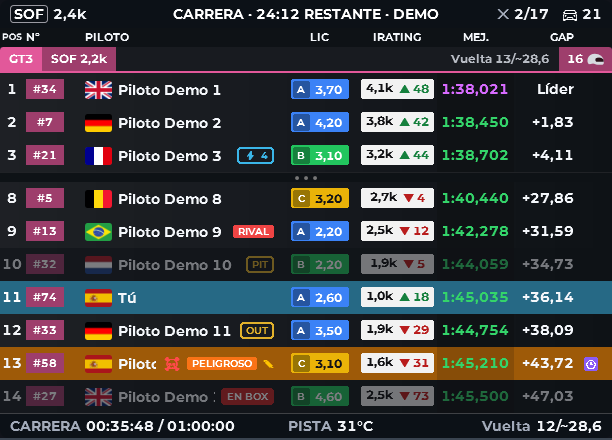
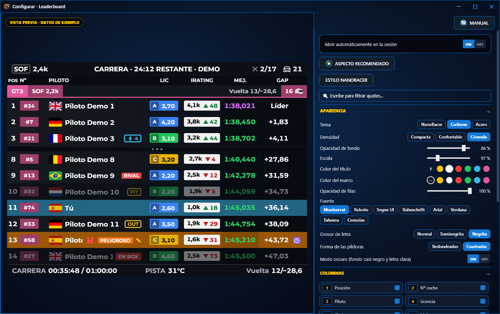

Guía › CADA OVERLAY › Qué significa cada columna
Qué significa cada columna
Las columnas que puedes encender en el Leaderboard, en el Relative y en EN DIRECTO, por orden alfabético. Entre paréntesis, en cuáles está.
Qué significa cada columna

Qué significa cada columna

- Bandera país
- la bandera del país del piloto. En el Leaderboard y el Relative no es una columna: se enciende con su propia casilla. (solo EN DIRECTO)
- Boxes (vuelta)
- en qué vuelta paró por última vez (L12 = vuelta 12). (Leaderboard y Relative)
- Clase
- su clase. (solo Leaderboard)
- Club
- su club de iRacing. (solo Leaderboard)
- Distancia
- segundos en pista entre ese coche y tú. (Leaderboard y Relative)
- Equipo
- el nombre de su equipo. (solo Leaderboard)
- Equipo / piloto
- el equipo o el piloto que va al volante, según el botón Equipos / Pilotos. (solo EN DIRECTO)
- Estado (PIT/OUT/GRÚA)
- si está en boxes, saliendo de boxes, en la grúa o con bandera. (solo EN DIRECTO)
- Gap
- diferencia con el primero de su clase. (Leaderboard y EN DIRECTO)
- Intervalo
- diferencia con el coche de delante de su clase. (Leaderboard y EN DIRECTO)
- iRating
- su iRating. En carrera, dentro de la píldora sale lo que ganaría o perdería (estimado por NanoRacer). (Leaderboard, Relative y EN DIRECTO)
- Licencia
- su licencia y su Safety Rating. (Leaderboard, Relative y EN DIRECTO)
- Logo marca
- la marca del coche. (Leaderboard, Relative y EN DIRECTO)
- Media
- su vuelta media. (Leaderboard y EN DIRECTO)
- Mejor / Mejor vuelta
- su mejor vuelta. En el Leaderboard, la más rápida de toda la sesión sale en morado. (Leaderboard, Relative y EN DIRECTO)
- Neumático
- dentro del círculo, las vueltas desde su última parada. iRacing no dice si cambió ruedas: es un cálculo de NanoRacer. (Leaderboard, Relative y EN DIRECTO)
- Nº coche
- el número de su coche. (Leaderboard, Relative y EN DIRECTO)
- Paradas
- cuántas veces ha parado en su plaza de boxes y, al lado, los segundos de la última (2 · 17,1). Subirse al coche, Reset o grúa no cuentan; pasar por el pit lane sin parar tampoco. Cuenta desde que abres NanoRacer. (Leaderboard y EN DIRECTO)
- Piloto
- el nombre del piloto. (Leaderboard y Relative)
- Pos. general
- su puesto contando todas las clases. (solo Leaderboard)
- Posición
- su puesto en su clase. (Leaderboard, Relative y EN DIRECTO)
- Puestos ±
- cuántos puestos ha ganado o perdido desde la salida. (Leaderboard y EN DIRECTO)
- Relevos (modo Equipos)
- cuántos cambios de piloto lleva su equipo. (solo EN DIRECTO)
- Ritmo 5V / Ritmo (5 vueltas)
- la media de sus últimas 5 vueltas limpias (sin boxes). (Leaderboard, Relative y EN DIRECTO)
- Ritmo 10V
- la media de sus últimas 10 vueltas limpias (sin boxes). (Leaderboard y Relative)
- Salidas pista / Salidas de pista
- cuántas veces se ha salido. Se pone de otro color a partir de 3. (Leaderboard, Relative y EN DIRECTO)
- Stint ant. / Stint anterior
- cuántas vueltas duró su tanda anterior. (Leaderboard, Relative y EN DIRECTO)
- Última
- su última vuelta. (Leaderboard y Relative)
- Última (Δ)
- su última vuelta y cuánto más lenta fue que su mejor vuelta. (solo EN DIRECTO)
- Última parada
- los segundos de su última parada y en qué vuelta fue (V12 = vuelta 12). (solo EN DIRECTO)
- Vuelta
- la vuelta en la que va. (Leaderboard, Relative y EN DIRECTO)
- Vueltas joker
- solo en rallycross, si algún coche tiene ese dato. (Leaderboard, Relative y EN DIRECTO)
- Δ última
- cuánto más lenta fue su última vuelta que su mejor vuelta. (Leaderboard y Relative)
CÓMO SE ELIGEN
Leaderboard y Relative: ⚙ CONFIGURAR → COLUMNAS. EN DIRECTO: ⚙ Ajustes → COLUMNAS. Marca la casilla de cada columna que quieras ver y arrastra las fichas para cambiar el orden.
CUIDADO
Cuantas más columnas, más ancho es el overlay. Si se sale de la pantalla, quita alguna o baja la Escala.